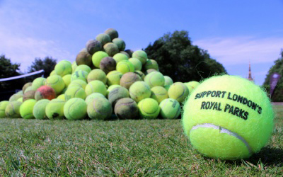
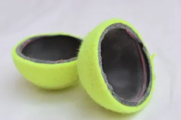
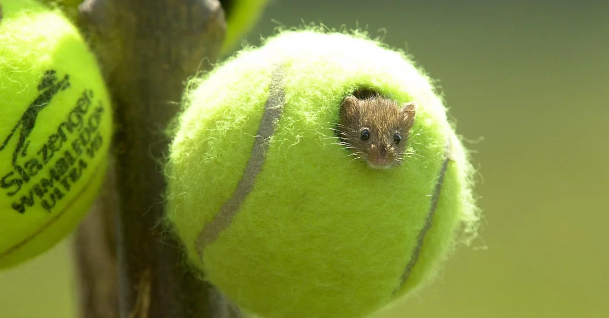

The Problem With Tennis Balls:
I really like to play tennis. Tennis is a great sport, it's fun, it's simple, and it's active. The only problem is, it's way worse for the environment than you would think. My 12 court tennis club alone uses about 8000 balls each year. Thanks to statistics from The Resource, I learned that 300 million tennis balls are manufactured every year. This number keeps going up as well because more countries are developing while the world's resources keep going down.
Tennis balls are made out of yellow felt on the outside which is made from wool and cotton and they have a rubber core. Lots of sheep are taking up farmland to obtain wool for the tennis balls. Where do we get this farmland? We cut down the trees. The rubber used in tennis balls is natural rubber. That means it comes from trees. This contributes to deforesting. When you cut down trees, it decreases the diversity of the trees and it helps limit the number of trees growing back. Trees are used as a shelter for many animals and destroying their shelters would be very devastating for all the wildlife in the area. In some techniques of harvesting rubber from trees, the rubber is taken out like maple syrup. This is done in plantations and is also very intensive on the environment. No wildlife can live in these plantations, causing the wildlife to migrate to other areas, which limits the habitable areas on Earth.
Not just the process of making tennis balls is bad. Of those 300 million tennis balls manufactured, less than half a percent are recycled according to Retour Tennis, which focuses on recycling tennis balls. Tennis balls take 400 years to decompose because of all the additives that are put in them to improve strength and gas permeability. As well, when the additives are decomposing, they leach toxic and nasty chemicals that can flow into local rivers or streams. This will hurt the people living there in the community. It also hurts the local animals who all drink water from that stream. The stream will eventually flow into the ocean.
Tennis balls aren't the only part effecting Life on Land. Plastic containers also have a massive effect on the environment. All tennis balls are stored in plastic containers that hold three tennis balls each (sometimes four). Even if you order in bulk, the supplier will send you multiple packs of three. This means there are 100 million of these plastic containers, which are just like a plastic water bottle that is thrown out each year. Very few tennis ball cans are recycled due to the fact that there are three types of plastic in them and aluminum as well, which makes them very hard to sort on a large scale. Most end up in landfills because of this. Also, no tennis cans are made from recycled plastic because they are not as good at keeping the air in the can which in turn keeps the air in the ball which keeps the ball's pressure up so that the ball bounces longer. The plastic in the landfills also leaches toxic chemicals which end up in streams, harming the environment even more.
To gain rubber for the tennis balls trees must be cut down. Trees and plants absorb carbon dioxide for nutrients. But, when they die they release that carbon dioxide right back into the atmosphere. This then hurts animals all over the world, not just in that one ecosystem. Climate change effects the temperature of the planet and some animals can't survive in colder or hotter temperatures. Synthetic rubber, even though it is not used in tennis balls, is also bad. During the vulcanization of the rubber, soot is released. Soot is very bad for the environment.
The Solutions:
However, there are some solutions. Switching to pressureless balls means that the cases don't need to be made out of plastic. They can be made out of cardboard which can be recycled very easily. These balls also last longer because there is no pressure to leak from the ball to stop it from bouncing. Essentially, they can last for hundreds of years if you don't mind playing with the felt worn off. There are also ball pressurizers. When your ball has lost most of its bounce, you can repressurize it to an extent. The only problem is that the pressurizer is expensive and doesn't work that well. Developing a less expensive and more effective pressurizer would help reduce the waste. Also spending more time and more effort creating a very high-scale tennis can recycler would limit waste vastly. Dogs are becoming more and more popular every day. Owners want to buy tennis balls for their dogs. However, instead of them buying brand new expensive tennis balls, they could use old tennis balls if they were available. This is a simple and cost free solution. Also many tennis clubs in Toronto have bins to put your tennis balls in when they are finished. The tennis balls go to the bottom of chairs in classrooms to help make the classes quieter. The next time you are going to throw away your tennis ball, put it into one of those bins instead. One final and very creative solution some tennis tournaments are doing is instead of throwing out the tennis balls, they use the tennis balls as a shelter for a very endangered species called the harvest mice.
Donate here to help fund tennis ball recycling!